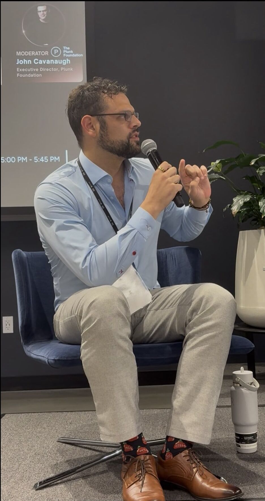

John P.
Cavanaugh
John P. Cavanaugh is a founder, privacy technologist, and PhD candidate at the University of Cincinnati's AI BIO Lab, where he builds privacy-by-design AI systems rooted in explainability and human accountability. After nine years co-founding and leading Plunk Student Community, he spent five years as Executive Director of the Plunk Foundation, serving 30 million children, women, and veterans through consent-first digital safety technology. Today he serves on boards across nonprofit, civic, and technology sectors and advises organizations on responsible AI, privacy strategy, and ethical leadership.

Featured


Credentials
Scale
Speaking
One offer, kept simple: book John for a presentation, keynote, or panel — $500 flat. AI governance, privacy, explainable AI, and the surveillance economy, delivered by someone who built the technology, published the research, and paid the price of the principle.
See talks & book →Advisory & Board
Selected Press
- AI Notable Movers & Makers, 2024
- 2025 Data Privacy Hero — Top Nominated DataGrail
- How Nonprofits Can Navigate Privacy Laws & Data Risks DataGrail
- New Partnership to Help Vulnerable Families UC Digital Futures
- Why We Walked Away From $14 Million to Protect User Data Cincinnati Podcast Studio
- Grassroots Privacy, Explainable AI & the Student Data Crisis The Data Diva — E199
- Encrypting Freedom: AI & The Data Battle Disruption Now — E169
- Data Privacy & The Digital Divide Mutual Exchange Radio
- Privacy as a Grassroots Movement Masters of Privacy
- Panel: Responsible AI Safety, Security & Privacy Cincy AI Week
- How to Fund Technology as a Program AFP Greater Cincinnati
- Data Privacy & The Digital Divide Center for a Stateless Society
Experience
Projects & Research
First-author. Improving model robustness under noise perturbation using fuzzy feature augmentation. North American Fuzzy Information Processing Society, 2026.
First-author. Fuzzy inference systems applied to rank and surface actionable peer feedback at scale.
Ground-up AI architecture combining fuzzy logic, graph databases, and vector databases — built with XAI principles and privacy by design.
Consent-first infrastructure enabling social service agencies to act as one team without re-exposing vulnerable families' data.
Connect
If you're building something that matters — a company, a coalition, a system — and you need someone who has done it before and will tell you the truth, let's talk.